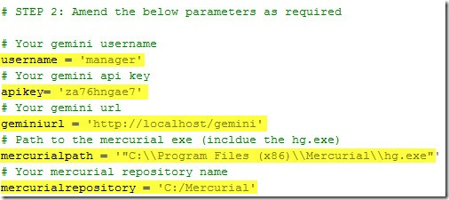
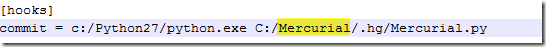
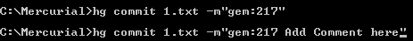

Download the Mercurial connector.
Ensure that you have Python 2.x installed.
Edit the 'Mercurial.py' script and change the following variables as required: username, apikey, geminiurl, Mercurialpath, Mercurialrepository

Put the 'Mercurial.py' into the '.hg' directory for your Mercurial repository (e.g. C:\Mercurial\.hg).
If missing, create the 'hgrc' file and ensure that the '[hooks]' section exists.
Put the following line into the 'hgrc' file: 'commit = c:/Python27/python.exe C:/MyRepository/.hg/Mercurial.py'. Please replace the Highlighted are a in the image below with your repository name.

Copy the map-cmdline.gem file into the 'Templates' folder of your Mercurial installation.
You will need to commit your files using Command Prompt. When you commit files to Mercurial, simply start your commit message with 'gem:XXX' where 'XXX' represents a Gemini Issue Id. In the example below the 'XXX' is replaced with '217'.

All commited files and comments appear under Code Review as follows.